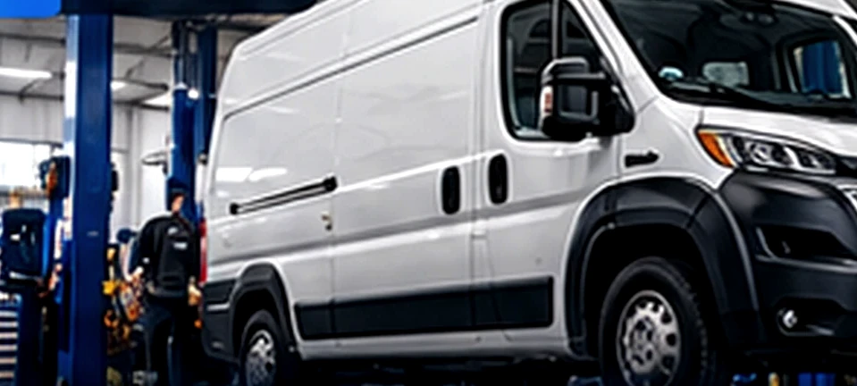
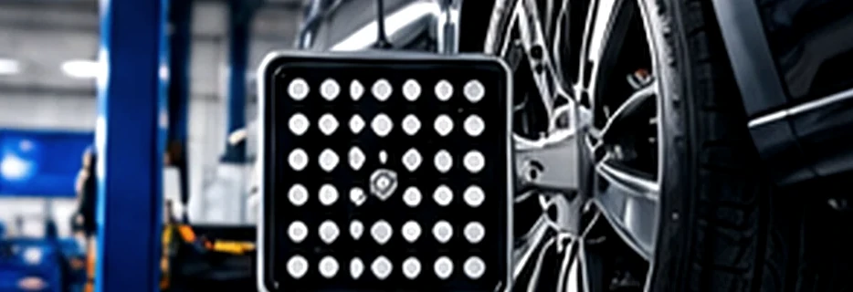

QUEM MOVESEU MUNDONÃO PARA.
Mecânica completa de linha leve e diesel leve. Alinhamento, balanceamento e manutenção para carros, vans, picapes e frotas.
NÃO É SÓ
UM VEÍCULO.
É O QUE ELE MOVE.
Uma família chegando em segurança. Uma van cumprindo sua rota. Uma picape pronta para o próximo trabalho.
Na Pneu.com Jundiaí, a mecânica existe para que essas histórias continuem em movimento.
CONHEÇA NOSSA PROPOSTAO SERVIÇO CERTO.
NO LUGAR CERTO.
Escolha uma especialidade e entenda como podemos ajudar.

VANS / PICAPES / UTILITÁRIOSDIESEL LEVE
Para quem depende do veículo para trabalhar. Manutenção e revisão de vans, picapes e utilitários diesel leve.
VER ESPECIALIDADE
DETALHES
QUE VOCÊ
SENTE NA DIREÇÃO.
Direção firme, rodagem mais confortável e atenção ao desgaste irregular. Precisão começa com uma boa avaliação.
ENTENDER O SERVIÇO[ 04 / NOSSO JEITO DE TRABALHAR ]
SEM SURPRESAS.
DO INÍCIO AO FIM.
Você entende a avaliação e aprova o orçamento antes da execução. Informação clara faz parte do cuidado.
VOCÊ NOS CONTA
Descreve o veículo, os sintomas ou o serviço desejado.
NÓS AVALIAMOS
Inspeção técnica e apresentação do orçamento.
VOCÊ DECIDE
O serviço é realizado após sua autorização.
[ 05 / EMPRESAS & FROTISTAS ]
SEU NEGÓCIO
NÃO PODE
FICAR PARADO.
Manutenção preventiva e acompanhamento para vans, picapes e veículos de trabalho. Vamos entender a rotina da sua frota.
SOLICITAR PROPOSTA PARA FROTA[ 06 / OLHE MAIS DE PERTO ]
O CUIDADO ESTÁ
NOS DETALHES.
Imagens de demonstração da proposta visual. Fotografias definitivas da Pneu.com devem ser realizadas na própria oficina.
[ PRESENÇA LOCAL ]
A CONFIANÇA COMEÇA
ANTES DA VISITA.
Confira nossa localização e as avaliações publicadas pelos clientes diretamente no Google Maps.
ABRIR PERFIL NO GOOGLE MAPS[ A PRÓXIMA ETAPA COMEÇA AQUI ]
VAMOS
CUIDAR DO
SEU CAMINHO.
Preencha o essencial. A mensagem seguirá pronta para o WhatsApp da oficina.
[ DÚVIDAS FREQUENTES ]
PODE
PERGUNTAR.
Informações diretas para decidir o próximo passo com tranquilidade.
01Vocês atendem vans e picapes a diesel?+
Sim. Nossa atuação contempla manutenção de diesel leve, incluindo vans, picapes e utilitários. Descreva seu veículo no WhatsApp para confirmar o serviço.
02O alinhamento e o balanceamento são a mesma coisa?+
Não. O alinhamento verifica a geometria das rodas e da direção. O balanceamento corrige desequilíbrios no conjunto de rodas e pneus.
03Posso solicitar um orçamento antes de levar o veículo?+
Você pode enviar modelo, ano e sintomas pelo WhatsApp. A equipe orienta sobre a avaliação necessária e a elaboração do orçamento.
04A oficina atende frotas de empresas?+
Atendemos solicitações de empresas com vans, picapes e veículos leves. As condições de atendimento são avaliadas conforme o perfil de cada frota.
05Onde fica a Pneu.com Jundiaí?+
Na Avenida Dr. Jacyro Martinasso, 100, em Jundiaí, São Paulo. Use o botão de rota para abrir no Google Maps.